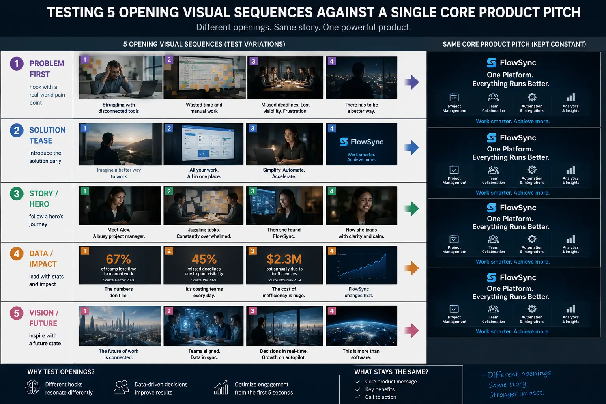
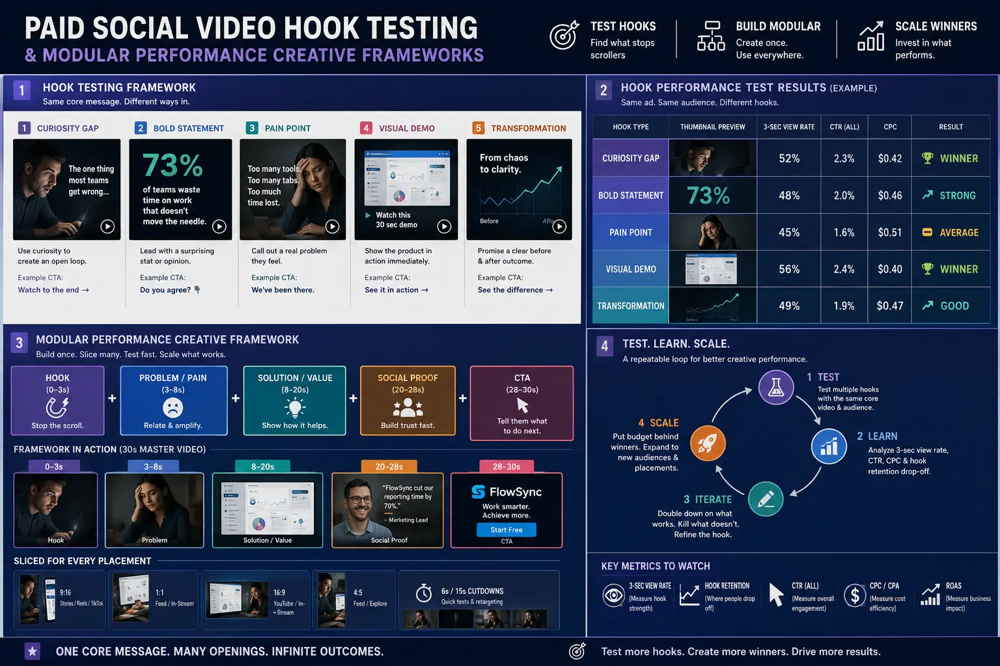
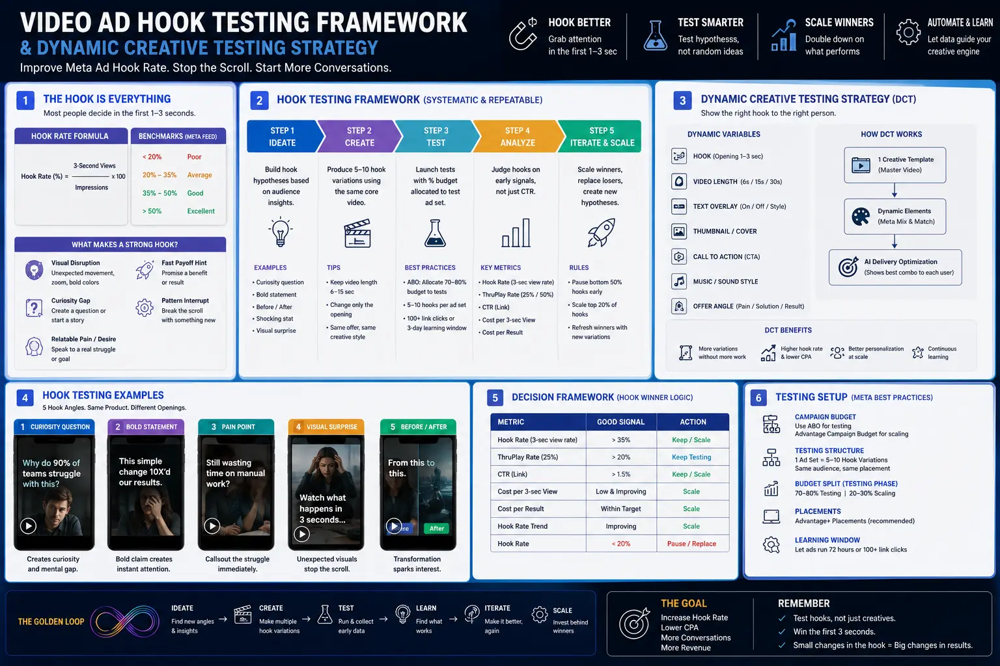

Testing 5 Opening Visual Sequences Against a Single Core Product Pitch
The 3-Second Bottleneck: Why Most Video Ads Fail Before the Pitch Begins
In modern paid social advertising across Meta, TikTok, and YouTube Shorts, visual attention is the primary currency. Brands often spend thousands of dollars scripting, filming, and polishing a 30-second commercial, only to watch their campaign performance stumble under high Customer Acquisition Costs (CAC). When performance marketers audit these underperforming video campaigns, the issue is almost never the core product pitch, the pricing offer, or the landing page experience. Instead, the failure occurs in the first 3 seconds of playback. Over 80% of video ad drop-off happens before a viewer ever hears the value proposition or sees the product in action.
To solve this structural friction, high-growth direct-to-consumer (DTC) brands and B2B agencies are abandoning traditional linear video shoots in favor of Paid Social Video Hook Testing. Rather than creating 5 completely distinct commercials, smart growth teams produce a single, bulletproof core product pitch body and pair it with 5 contrasting 3-second opening visual sequences. This modular approach leverages Modular Performance Creative principles to isolate the single biggest variable in social media advertising: thumb-stop attention.
By deploying a systematic Video ad hook testing framework, advertisers can dramatically accelerate creative iteration cycles, reduce production costs, and focus resources on improving Meta ad hook rate. When editors utilize Short-Form Visual Asset Slicing, they can effortlessly combine separate opening hooks with standardized body segments, instantly generating scalable short-form ad variations. In this comprehensive guide, we will unpack how to execute a 1-to-5 hook testing framework, script high-converting visual interrupts, and run a high-performing dynamic creative testing strategy that unlocks scalable ROAS.
The Architecture of Modular Performance Creative: 1 Pitch, 5 Visual Hooks
Understanding the structural mechanics of Modular Performance Creative is essential before stepping onto a production set. Traditional ad creative production treats a commercial as an indivisible 30-second asset. If the ad fails to convert, media buyers are forced to pause the ad and request an entirely new creative asset. This cycle is costly, slow, and mathematically inefficient.
By contrast, modular ad creative production breaks the video into distinct, interchangeable modules:
- The Opening Hook (0–3 Seconds): Designed exclusively to trigger an involuntary orienting response, interrupt scroll behavior, and establish viewer curiosity. The hook contains a visual pattern interrupt and a strong text overlay hook line.
- The Problem-Solution Bridge (3–8 Seconds): Transitions the viewer seamlessly from the visual interrupt into the core consumer problem, building immediate context and emotional resonance.
- The Core Product Pitch Body (8–22 Seconds): The unchanged, high-converting core narrative showcasing product benefits, unique selling propositions (USPs), macro demonstrations, and social proof.
- The Call-to-Action Ending (22–30 Seconds): Directs the viewer to take immediate action with clear offer framing, urgency cues, and interactive button prompts.
When executing Short-Form Visual Asset Slicing, the core pitch body, problem-solution bridge, and CTA ending remain identical across all iterations. Editors only swap out the initial 3 seconds. This allows production teams to test 5 unique visual angles—such as a negative callout, an extreme product macro transform, a curiosity question, a bold stat, and a raw UGC demo—against the exact same pitch. This approach guarantees that performance variations between ads are mathematically driven by the hook, giving media buyers actionable creative data.
Exponential Testing Capacity
Shooting 5 hook variations takes under 30 minutes on set but yields 5 distinct ad assets, multiplying ad testing velocity fivefold without extra crew costs.
Lower Cost Per Acquisition
Improving Meta ad hook rate from 20% to 40% doubles the volume of qualified prospects reaching your pitch body, cutting overall CPA by 25% to 40%.
Granular Creative Insights
By keeping the core pitch body static, performance managers gain true statistical isolation to identify exactly which visual triggers resonate with target audiences.
Streamlined Post-Production
With Short-Form Visual Asset Slicing, editors can assemble 5 ready-to-launch short-form ad variations in less than an hour of editing time.

The 5 High-Converting Visual Hook Archetypes
To maximize the success of your Paid Social Video Hook Testing, the 5 opening visual sequences must not be minor variations of each other. Testing five slightly different camera angles of the same actor will fail to provide meaningful contrast. Instead, your Video ad hook testing framework should test 5 distinctly different psychological and visual concepts:
- 1. The Negative Callout / Warning Hook: Opens with bold, high-contrast text overlay like "Stop using traditional X until you watch this" or "3 mistakes making your Y worse." The visual sequence features a rapid split-screen or immediate visual rejection, creating cognitive dissonance and compelling viewers to pause their scroll to prevent a perceived mistake.
- 2. The Extreme Visual Transformation (Macro Zoom): Opens on an unidentifiable macro close-up of a product texture, liquid pour, or physical surface. Over 1.5 seconds, the camera rapidly pulls back with a kinetic sound effect to reveal the full product in high resolution. This leverages prediction error in the brain, driving high curiosity.
- 3. The Curiosity-Driven Question / Speed Ramp: Combines a provocative question overlay (e.g., "Is this the smartest way to solve Z?") with a speed-ramped visual sweep. The action begins in dramatic ultra-slow motion before snapping instantly to 2x speed as the sentence finishes, creating temporal disorientation that holds attention.
- 4. The Bold Stat / Counter-Intuitive Claim: Features a striking visual graphic or unexpected action (like dropping a product into water or cutting a container open) paired with a bold claim: "Why 92% of users switched to this in 2026." The visual impossibility or abrupt action forces the viewer to watch past 3 seconds to contextualize the statement.
- 5. The Raw Native UGC Unboxing / Authentic Reaction: Shot on a smartphone in portrait 9:16 orientation without professional studio lighting. The creator aggressively opens a package or reacts with genuine shock within the first second. This native aesthetic blends seamlessly into organic feeds, bypassing subconscious ad blindness.
Each of these 5 visual concepts acts as a distinct net cast into the feed. Crafting high-converting video hooks requires matching each visual concept with tight, punchy on-screen typography and synchronized sound design so the transition into the core body feels fluid and intentional.
Step-by-Step Implementation: Building a Video Ad Hook Testing Framework
To execute modular ad creative production efficiently, creative directors and media buyers must establish a repeatable workflow. Below is the step-by-step framework used by growth agencies to engineer and test 5 visual hooks against a core pitch:
Phase 1: Pre-Production & Scripting
- Define 1 core product pitch body (15–20 seconds) covering problem, solution, USPs, and CTA.
- Script 5 contrasting 3-second hook visual concepts with matching text overlays.
- Ensure the audio bridge at second 3 seamlessly matches the opening voiceover of the core body.
- Storyboard camera movements for maximum kinetic energy and thumb-stop visual impact.
Phase 2: Production Shoot
- Film the primary core pitch body first, capturing multi-angle B-roll and clear A-roll dialogue.
- Batch-shoot all 5 visual hook sequences in rapid succession on set in under 30 minutes.
- Capture both high-end camera movements and mobile UGC-style raw video variations.
- Record audio room tone and scratch tracks to ensure smooth audio crossfades during post.
Phase 3: Post-Production & Slicing
- Execute Short-Form Visual Asset Slicing in Premiere Pro, DaVinci Resolve, or CapCut.
- Lock the core pitch body timeline and splice each 3-second hook onto the front track.
- Apply dynamic kinetic sound effects (whooshes, pops, glitches) to punctuate the visual interrupt.
- Export 5 distinct, platform-ready MP4 assets with standardized naming conventions for testing.

Deploying a Dynamic Creative Testing Strategy on Meta & TikTok
Once your 5 short-form ad variations are edited and exported, the next critical step is media buying deployment. Throwing all 5 ads randomly into existing scaling campaigns will pollute your performance data. To isolate hook performance, media buyers must utilize a structured dynamic creative testing strategy.
On Meta Ads Manager, setup a dedicated Dynamic Creative Test (DCT) campaign or an Advantage+ Creative testing ad set. Import your single core pitch body audio and copy, but upload the 5 distinct video hook files as creative assets. Meta’s machine learning algorithm will programmatically serve the variations to micro-segments of your target audience, evaluating early retention indicators.
When analyzing test results, pay attention to the primary diagnostic metric: 3-Second Video View Rate (Hook Rate). Hook Rate is calculated as:
Hook Rate (%) = (3-Second Video Views ÷ Total Impressions) × 100
In benchmark paid social accounts, a standard unoptimized video achieves a 15% to 20% Hook Rate. By deploying Paid Social Video Hook Testing, winning visual hooks regularly push Hook Rates past 35% to 50%. When improving Meta ad hook rate to this level, twice as many prospective customers watch your core product pitch body without any increase in CPM (Cost Per Thousand Impressions).
Once a winning visual hook is identified (e.g., Hook #3 achieves a 42% Hook Rate and a $18 CPA compared to Hook #1's 18% Hook Rate and $38 CPA), isolate that winning asset. Scale the winning ad variation into your main CBO (Campaign Budget Optimization) or Advantage+ Shopping Campaign (ASC+), while retiring the underperforming variants.
Maximizing Production ROI: The PhD Ads Methodology in Madurai
For growing ecommerce brands and enterprise businesses, maintaining a continuous stream of fresh ad creative is one of the most demanding operational challenges. Traditional production workflows demand excessive budgets and long lead times. At The PhD Ads, based in Madurai, we specialize in high-impact ad creative production built specifically for performance scaling.
Our performance creative team combines cinematic camera work with data-driven editing frameworks. Through Short-Form Visual Asset Slicing and Modular Performance Creative systems, we help regional and global brands produce month-long advertising pipelines from a single shoot day. By crafting high-converting video hooks tailored to localized target segments across South India and international markets, we ensure your ad campaigns consistently capture attention and drive conversions.
Conclusion
Scaling paid social advertising in 2026 and beyond does not require massive commercial budgets or hundreds of script rewrites. It requires a disciplined, modular approach to creative testing. By testing 5 opening visual sequences against a single core product pitch, you eliminate creative guesswork and systematically solve the 3-second attention bottleneck.
Leveraging a Video ad hook testing framework powered by Short-Form Visual Asset Slicing, Modular Performance Creative, and a robust dynamic creative testing strategy gives performance marketers the exact leverage needed for improving Meta ad hook rate and driving sustained ROAS.
Key Topics
Ready to Scale Ad Performance with Modular Video Hook Testing?
At The PhD Ads in Madurai, we specialize in short-form visual asset slicing, paid social video hook testing, modular performance creative, and performance ad production. Let our team engineer high-converting video hooks that stop the scroll and lower your acquisition costs.
Email: team@e2o.in